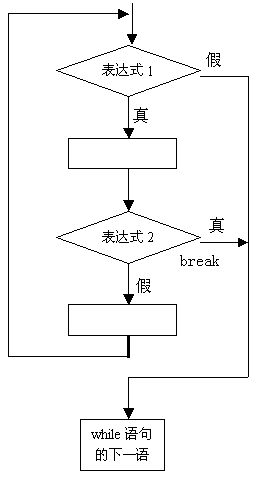
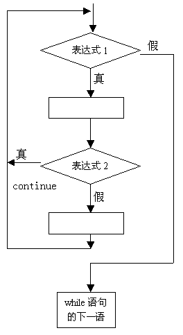

1) 四种循环都可以用来处理同一个问题，一般可以互相代替。但一般不提倡用goto型循环。
2) while和do-while循环，循环体中应包括使循环趋于结束的语句。for语句功能最强。
3) 用while和do-while循环时，循环变量初始化的操作应在while和do-while语句之前完成，而for语句可以在表达式1中实现循环变量的初始化。
break语句通常用在循环语句和开关语句中。当break用于开关语句switch中时,可使程序跳出switch而执行switch以后的语句；如果没有break语句,则将成为一个死循环而无法退出。break在switch 中的用法已在前面介绍开关语句时的例子中碰到,这里不再举例。
当break语句用于do-while、for、while循环语句中时,可使程序终止循环而执行循环后面的语句, 通常break语句总是与if语句联在一起。即满足条件时便跳出循环。
main()
{
int i=0;
char c;
while(1) /*设置循环*/
{
c='\0'; /*变量赋初值*/
while(c!=13&&c!=27) /*键盘接收字符直到按回车或Esc键*/
{
c=getch();
printf("%c\n", c);
}
if(c==27)
break; /*判断若按Esc键则退出循环*/
i++;
printf("The No. is %d\n", i);
}
printf("The end");
}
1) break语句对if-else的条件语句不起作用。
2) 在多层循环中, 一个break语句只向外跳一层。
continue语句的作用是跳过循环本中剩余的语句而强行执行下一次循环。continue语句只用在for、while、do-while等循环体中,常与if条件语句一起使用,用来加速循环。其执行过程可用下图表示。
1) while(表达式1)
{ ……
if(表达式2)break;
……
}
2) while(表达式1)
{ ……
if(表达式2)continue;
……
}

main()
{
char c;
while(c!=13) /*不是回车符则循环*/
{
c=getch();
if(c==0X1B)
continue; /*若按Esc键不输出便进行下次循环*/
printf("%c\n", c);
}
}